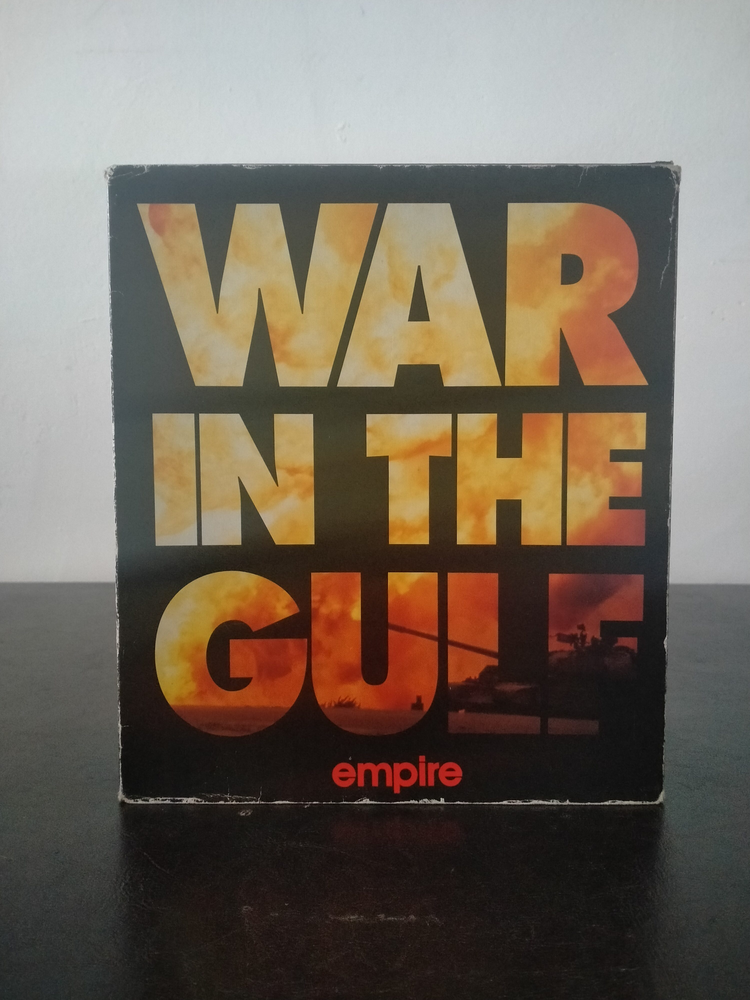

Ficha #000077
War in the Gulf
War in the Gulf es una simulación táctica militar publicada por Empire Software en 1993 para IBM PC y compatibles. Ambientado en la Guerra del Golfo, el juego sitúa al jugador al mando de unidades acorazadas modernas, con especial protagonismo de tanques M1 Abrams, vehículos blindados, artillería, helicópteros y apoyo aéreo. Su propuesta combina control táctico, observación del campo de batalla, planificación de movimientos y uso de armamento moderno en escenarios inspirados en el conflicto de Kuwait e Irak. La edición física en caja grande para MS-DOS refleja el enfoque de los simuladores militares de comienzos de los noventa, con documentación impresa, mapas y soporte en disquete de 3,5 pulgadas, conservando interés como representación temprana de un conflicto contemporáneo dentro del PC gaming europeo.
- Formato
- Big Box
- Plataforma
- MsDos
- Género
- Simulación militar Simulador de tanque Wargame Estrategia táctica Combate moderno
- Serie
- Todos Big Box
- Desarrollador
- Oxford Digital Enterprises
- Distribuidor
- Empire Software
- EAN
- 0744788520000
Contenido de la edición
- Caja Big Box
- Manual
- Disquete de 3,5 pulgadas
- Mapa
- Láminas o fotografías documentales
- Documentación impresa
Preservación
- Protección
- No determinado
- Formato recomendado
- Otro
- Jugable en virtualización
- Sí
Edición en disquete de 3,5 pulgadas. Para preservación se recomienda realizar imagen sectorial del disquete original y conservar escaneos de manual, mapa y documentación impresa, ya que no hay evidencia suficiente para confirmar un sistema anticopia concreto.